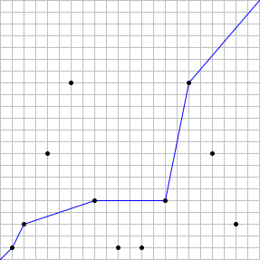

Let \(n\) be a positive integer.
Suppose there are stations at the coordinates \((x, y) = (2^i \bmod n, 3^i \bmod n)\) for
\(0 \le i \le 2n\). We will consider
stations with the same coordinates as the same station.
We wish to form a path from \((0,
0)\) to \((n, n)\) such that the
\(x\) and \(y\) coordinates never decrease.
Let \(S(n)\) be the maximum number
of stations such a path can pass through.
For example, if \(n = 22\), there
are \(11\) distinct stations, and a
valid path can pass through at most \(5\) stations. Therefore, \(S(22) = 5\).
The case is illustrated below, with an example of an optimal
path:

It can also be verified that \(S(123) =
14\) and \(S(10000) = 48\).
constint K = 30; constint P = 5; constint M = pow(K, P); Factorizer fc = Factorizer(M);
ll multiplicative_order(ll a, ll m) { if (m == 1) return1; auto fm = fc.factor_small(m); ll phi = 1; for (auto &pe : fm) { ll p = pe.first; int e = pe.second; ll t = 1; for (int i = 0; i < e - 1; ++i) t *= p; phi *= (p - 1) * t; } auto fp = fc.factor_small(phi); ll ord = phi; for (auto &pe : fp) { ll p = pe.first; while (ord % p == 0 && qpow(a, ord / p, m) == 1) ord /= p; } return ord; }
pair<ll, ll> preperiod_period(ll n) { ll t = n; int a = 0, b = 0; while ((t & 1) == 0) { ++a; t >>= 1; } t = n; while (t % 3 == 0) { ++b; t /= 3; } ll mu = max(a, b);
ll m2 = n, m3 = n; for (int i = 0; i < a; ++i) m2 /= 2; for (int i = 0; i < b; ++i) m3 /= 3;
vector<int> tails; for (ll v : pts) { int yy = int(uint32_t(v)); auto it = upper_bound(tails.begin(), tails.end(), yy); if (it == tails.end()) tails.push_back(yy); else *it = yy; }